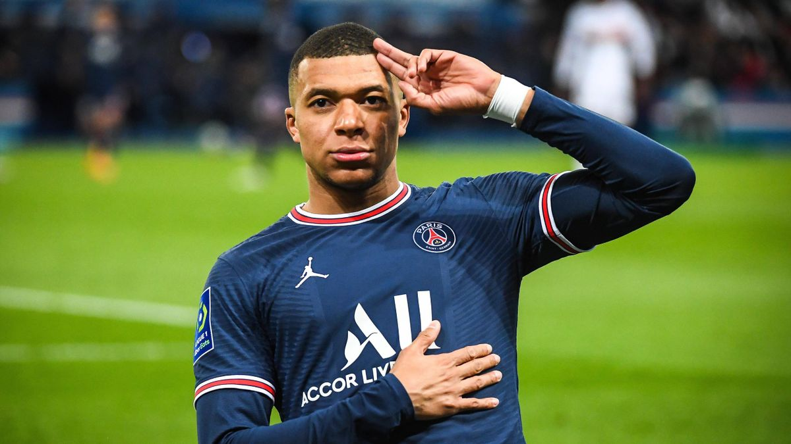
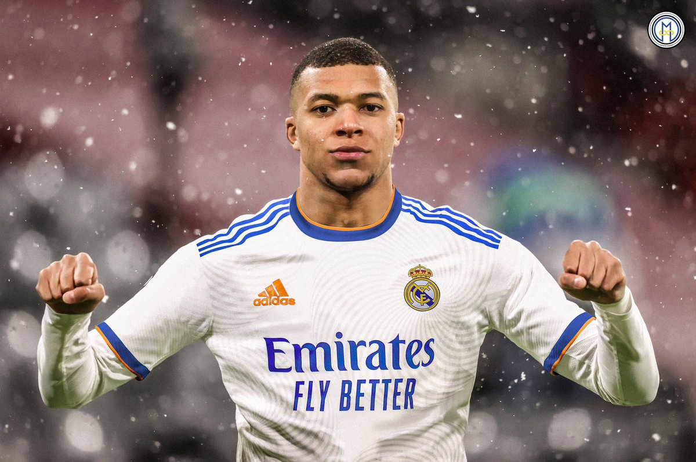
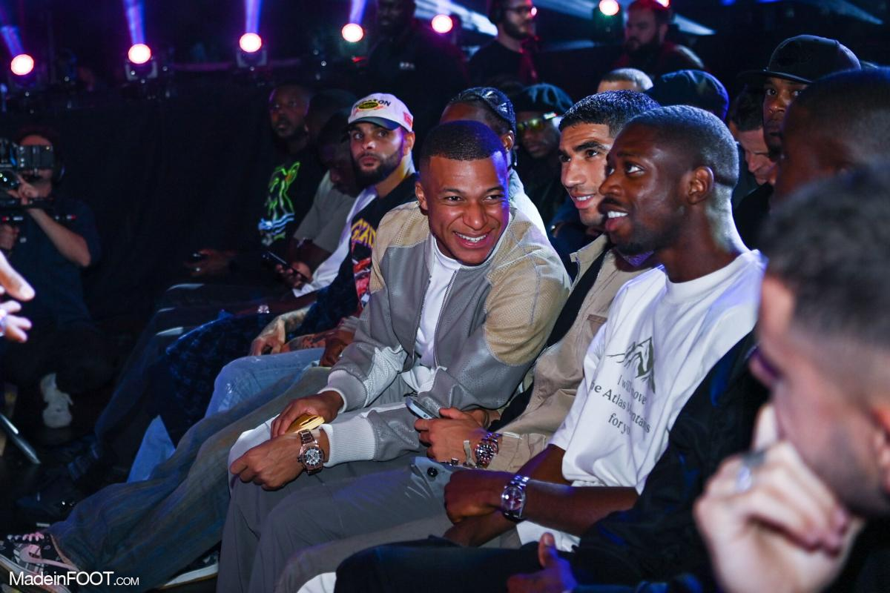

Voici une brève présentation de l'un des plus grands joueurs de football de sa génération.
Kylian Mbappé au Paris St Germain

Kylian Mbappé rejoint le Paris Saint-Germain en 2017, d'abord en prêt puis définitivement en 2018, après un passage brillant à l'AS Monaco. Il devient rapidement l'un des meilleurs joueurs du club, remportant de nombreux titres, dont plusieurs Ligues 1. Malgré ses succès nationaux, il échoue à conquérir la Ligue des champions avec le PSG. En 2023, après des tensions liées à son avenir, Mbappé annonce son intention de quitter le club, attirant l'intérêt de clubs comme le Real Madrid.
Kylian Mbappé au Real Madrid

Depuis son arrivée au Real Madrid, Kylian Mbappé a rapidement marqué l'histoire du club, enchaînant les performances exceptionnelles. Il a contribué aux titres de la Liga et à la conquête de la Ligue des champions, devenant un pilier de l'attaque madrilène aux côtés de stars comme Karim Benzema et Vinícius Júnior. Sa vitesse, ses dribbles et son sens du but font de lui un joueur incontournable sur la scène internationale. Bien que ses débuts au Real aient été marqués par des attentes élevées, Mbappé continue de faire rayonner sa carrière au sein du club madrilène.
Kylian Mbappé sort tout les soirs en boite de nuit ?

Kylian Mbappé, bien qu'étant une figure publique et un modèle pour de nombreux jeunes, a parfois fait parler de lui pour ses sorties en boîte de nuit. Ces moments de détente, bien que privés, ont suscité des réactions, surtout dans le cadre de sa carrière de sportif de haut niveau. En effet, certains observateurs soulignent qu'il est essentiel pour un joueur de son calibre de maintenir une discipline de vie stricte, loin des distractions. Cependant, Mbappé a toujours affirmé qu'il savait gérer ses moments de récréation et que ces sorties ne nuisaient en rien à sa concentration ou à ses performances sur le terrain. En dépit des critiques, il reste une star du football, continuant de briller sur le terrain tout en restant discret sur sa vie personnelle.